TILLGÄNGLIGHET
Vår biograf är tillgänglighetsanpassad. Undrar du över något speciellt eller har du förslag på förbättringar är du alltid välkommen att kontakta oss, antingen via biljettkassan, telefon eller mail.
Kontakta ossSyntolkning på bio och uppläst text
Syntolksutrustning: Vi tillhandahåller inte utrustning på biografen, men du som är i behov av syntolkning kan få det via en app i din smarta mobiltelefon eller surfplatta. Det enda du behöver för att ta del av tjänsten är en app och ett par hörlurar till din smarta mobiltelefon eller surfplatta. Exempel på appar: TillBio, BioPlay, SubTalk eller VoiceVision. För att se vilka titlar som är tillgängliga med syntolkning hänvisar vi till Bioguiden, klicka här där kan du även läsa mer om applikationerna.
Före biobesöket:
- Anslut din mobil eller surfplatta till internet.
- Öppna App Store eller Google Play och sök på "syntolkning".
- Ladda hem valfri app (TillBio, BioPlay, MovieTalk, SubTalk eller VoiceVision).
- Öppna appen och ladda ner ljudspåret till den film du ska se.
- Glöm inte att ta med hörlurar!
På plats i biosalongen:
- Sätt på flygplansläge.
- Öppna appen (TillBio, BioPlay, SubTalk eller VoiceVision).
- Tryck på appens startknapp, och behåll appen igång.
- Syntolkningen kommer igång automatiskt när filmen börjar.
Textade filmer
Alla våra ordinarie filmer på repertoaren visas i regel med svensk textning. Detta för att tillgängliggöra filmmediet för alla med någon form av hörselnedsättning och för att enklare uppfatta vad som sägs.
Vissa titlar, specialvisningar och vissa barnfilmer är undantagna då tillgången till filmkopior med svensk text är begränsad. Även äldre filmtitlar som producerats innan kravet att filmen ska kunna visas med svensk text för att få produktionsstöd infördes i filmavtalet kan sakna text. Dessa undantag kommuniceras vid respektive visning i vårt program.